Desenvolvimento de uma aplicação corporativa para centralização, gerenciamento e acompanhamento de solicitações de demandas destinadas ao time de Comunicação Interna.
O processo de solicitação de demandas era desorganizado e não centralizado, aumentando o tempo gasto pelo time na produção e gerando perdas no histórico do processo.
Criar um aplicativo que gerencie o processo de solicitações de demandas feitas por toda a empresa para seu time de Comunicação Interna. O aplicativo permite o cadastro da solicitação pelo cliente, o acompanhamento das demandas e o gerenciamento completo das solicitações pelo time, inclusive garantindo o envio de emails sobre o processo quando cada etapa é realizada a fim de sempre manter todos atualizados sobre o andamento da solicitação.
Esse é um fluxograma explicativo do processo dentro do aplicativo, apresentando de forma visual as principais etapas percorridas pelo usuário e pelo time de Comunicação Interna.
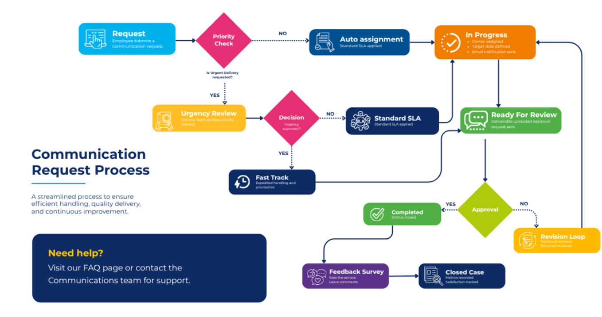
O primeiro passo do processo foi montar as listas ligadas ao app dentro do SharePoint: gerenciamento do cadastro das informações (Comms_team_list), lista dos perfis de usuário do time (Comms_team) e a lista com usuário e senha para o acesso da área do time (Credencial_comms).
Após, elas foram conectadas ao aplicativo e são mencionadas quando necessário dentro dos códigos.
Essa é a página inicial do aplicativo:
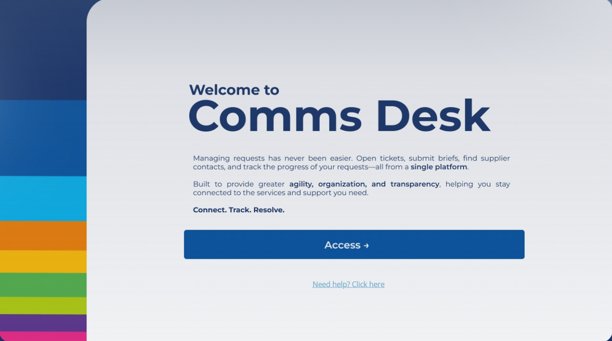
Nela, temos o botão de Need Help, onde quando o usuário clica, ele é levado automaticamente para seu email, já com o endereço correto para o qual ele deve enviar suas dúvidas e um título padrão.
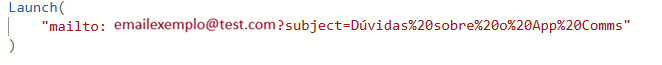
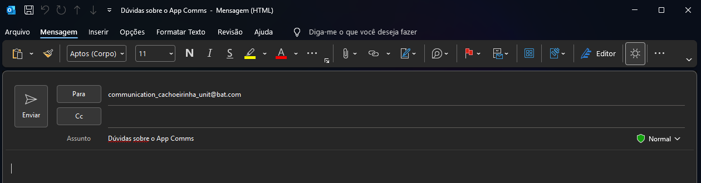
Já quando o usuário utiliza o botão Access, é usado o código Navigate(tela_inicial) para levar para a página secundária abaixo, onde podemos ver na parte direita o cronograma explicativo do fluxo de uso e na parte esquerda, vários botões que levam para páginas subsequentes.
Também podemos observar na imagem que o aplicativo exibe a foto de perfil e nome do usuário. Isso acontece porque conectei os grupos do Office ao aplicativo e utilizei um código para captar user.photo e name de quem está cadastrado dentro da Microsoft da empresa e está acessando o meu aplicativo.
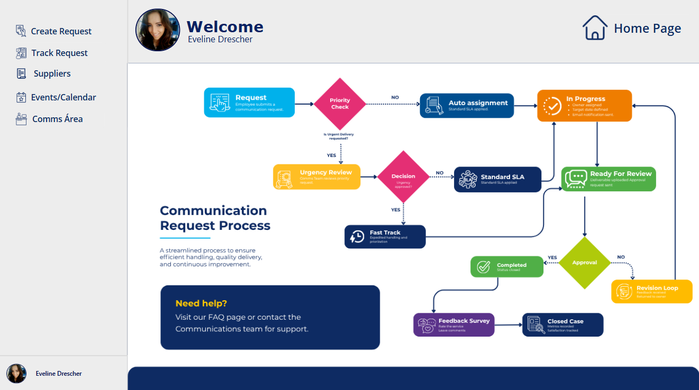
Quando queremos abrir uma nova solicitação, usamos o primeiro botão Create Request, onde incluí a criação de uma coleção para melhorar o desempenho do aplicativo, ajudando a:
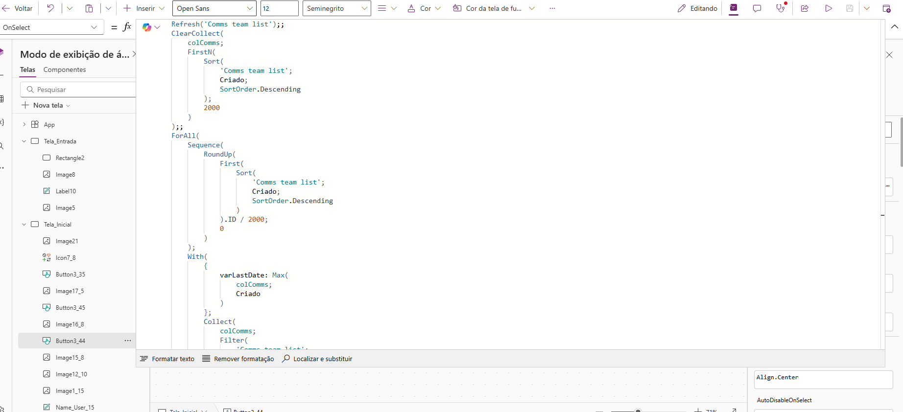
Já dentro da página de cadastro, utilizei um form para trazer os campos necessários da Comms_team_list a serem preenchidos pelos usuários.
Inclusive utilizando o asterisco para indicar que o campo é do tipo required. Se o usuário tentar salvar sem preencher algum deles, o processo será travado e na página vai aparecer uma notification informando que falta preencher algum campo obrigatório para salvar o formulário.
Na página também podemos observar que automaticamente temos o código da solicitação criado no Your Code, bem como a data de registro.
No caso da Registration Date, utilizo o código Today() para sempre gravar a data do dia automaticamente.
Set(
varCodigo;
"COMMS-" &
Year(Today()) &
"-" &
Text(
CountRows('Comms team list') + 1;
"000"
)
)Assim é contabilizado sempre um número a mais no registro também de forma automática.
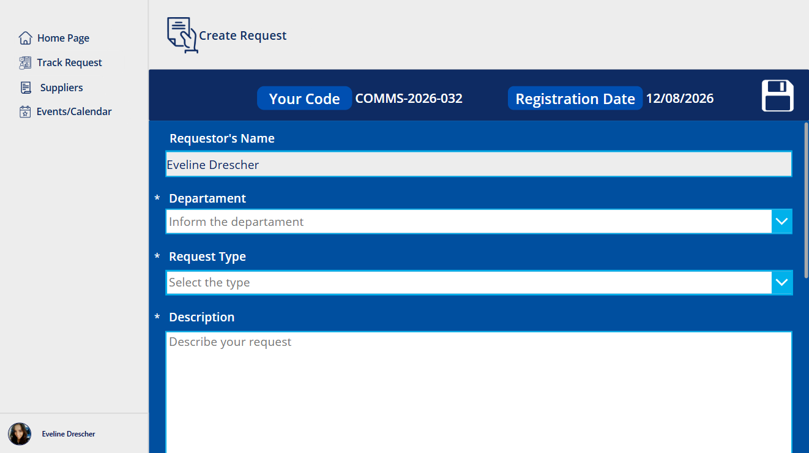
Nesse formulário, os campos de prazo, prioridade e tempo de dedicação planejado são calculados automaticamente de acordo com o tipo de solicitação selecionada pelo usuário.
Por exemplo, no caso da produção de vídeo, o planejado é que essa solicitação seja concluída em 48h pelo time responsável.
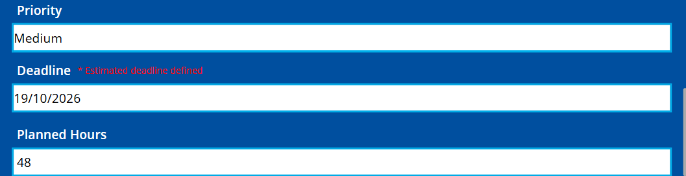
Além disso, o usuário pode definir se precisa que sua solicitação seja atendida com urgência e a justificativa para isso.
Caso ele opte por isso, o tempo automático de cálculo de prazo é cortado pela metade. No caso do exemplo, passaria de 48h para 24h.
A prioridade também passaria a constar como Urgent e não mais de acordo com os dias definidos:
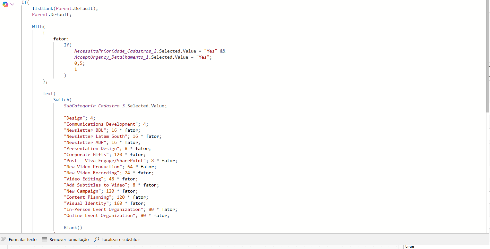
Por fim, quando o usuário realiza o processo de salvamento dos dados, os campos obrigatórios são verificados, algumas informações são guardadas em variáveis para melhora do desempenho e os emails informativos são enviados.
Um email é enviado para o time de comunicação para avisar sobre a nova solicitação e outro para o usuário informando que seu pedido foi criado.
Após isso, é realizado o refresh na coleção e ocorre a mudança no status para Created.
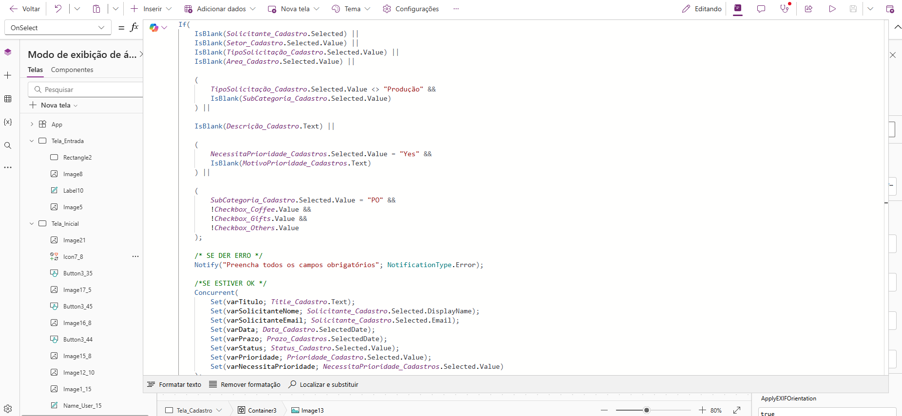
Após todo esse processo, o usuário é direcionado automaticamente para a página Track Request, onde já aparece a solicitação dele registrada.
Nessa página, incluí dentro da galeria um código para que sejam exibidas somente as solicitações do usuário conectado ao app, novamente usando o user.name vinculado ao grupo da Microsoft.
Além disso, na galeria aparece nesse processo primário o responsável não definido, porque ainda não existe um responsável de comunicação atribuído a esse pedido.
Ele aparece na galeria mais adiante, quando alguém do time de comunicação inclui seu nome na respectiva solicitação, com posterior aviso por email para o solicitante e mudança na galeria para o nome da pessoa que aceitou a demanda.
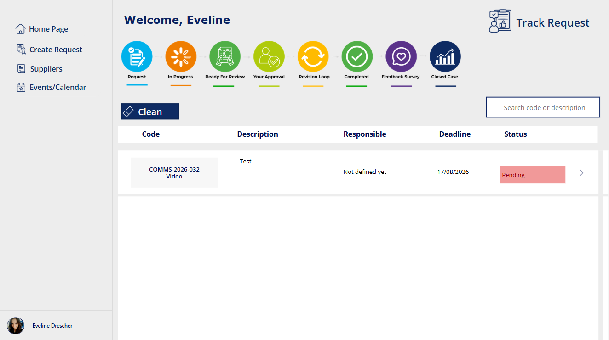
Agora que conhecemos as páginas que são acessadas pelos usuários, passamos para a área definida pelo time de comunicação que atende as demandas.
Para navegar é preciso acessar o botão Comms Área da página secundária do app.
Ali o usuário é direcionado para a página de inserção das credenciais, ligada diretamente à lista Credencial_comms.
Só vai acessar a área do time quem sabe o nome registrado para usuário e senha dentro dessa lista.
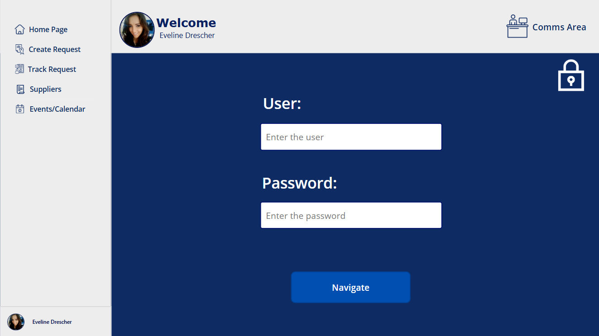
Quando a senha e usuário correto são registrados, o código utiliza Navigate(coms_area) para direcionar o usuário para a página principal de gerenciamento do time.
Na página principal de gerenciamento do time são carregadas novas coleções, com destaque para as coleções Status, Área e Buttons e a lista de usuários do time representados pela lista Comms_team.
Todos eles estão destacados na imagem abaixo.
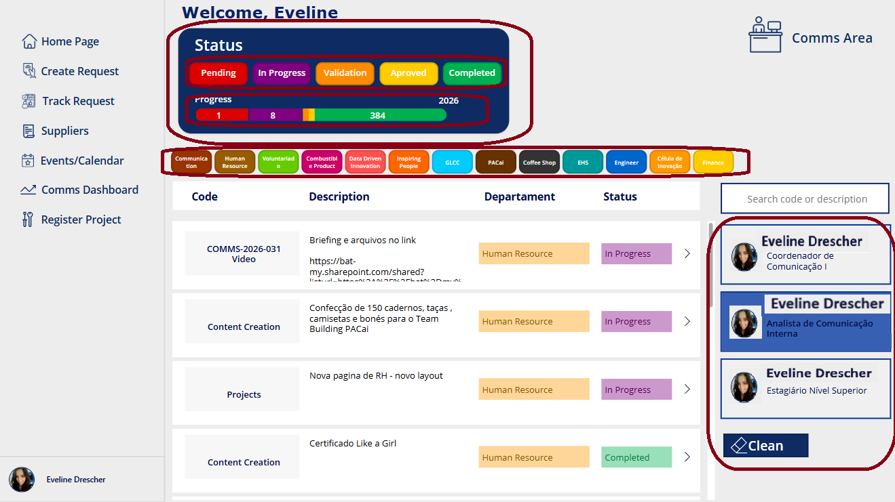
A coleção do Status é representada dentro da barra de progresso, que traz as solicitações de acordo com o status de andamento das solicitações, bem como nos botões, e apenas o que foi aberto no ano atual.
Por isso fiz um trabalho dentro das propriedades de Color, Width e X também para garantir as cores corretas, o posicionamento e a estrutura da barra.
Nessas partes, garanto o somatório das solicitações de acordo com o status atual.
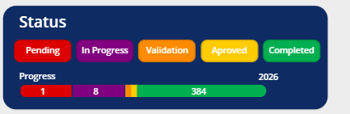
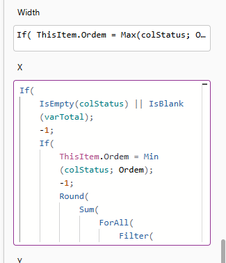
Nessa página também incluí a filtragem das solicitações por responsável, por área e por status, tudo isso sendo considerado na galeria dessa área.
Por fim, podemos observar que existem novas páginas disponíveis para o time de comunicação, como a de projetos, onde o time pode abrir uma solicitação sem tempo definido, de um trabalho que demanda mais etapas e tempo.
Esse processo é acessado pelo botão Register Project.
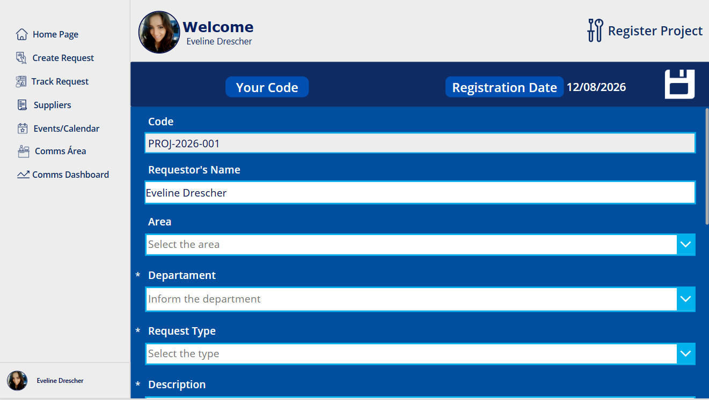
Não vou detalhar todo o processo de andamento da solicitação por ser um fluxo extenso, mas basicamente o status vai mudando de acordo com o andamento do processo, como o aceite da solicitação, o envio para aprovação para o solicitante e assim por diante, até o chamado constar como Concluído.
Nesse processo podem ser adicionados anexos de produção do chamado, e o botão Save vai ficando disponível apenas para o time de comunicação quando a ele for atribuído e ao usuário quando esse for o caso.
Por meio desse projeto garantimos a centralização das informações, a rastreabilidade do processo, a facilidade da comunicação e a economia de tempo, facilitando um fluxo tanto para o solicitante quanto para o time responsável.
Além disso, os dados ficam disponíveis dentro da lista no SharePoint, podendo ser analisados em BI para visualizar insights valiosos para o negócio.
Todas as solicitações passam a ser registradas e acompanhadas em um único ambiente.
O histórico e o andamento das demandas ficam registrados ao longo do processo.
Notificações por email mantêm solicitantes e equipe atualizados sobre cada etapa.
As informações estruturadas no SharePoint podem ser utilizadas para análises e geração de insights.